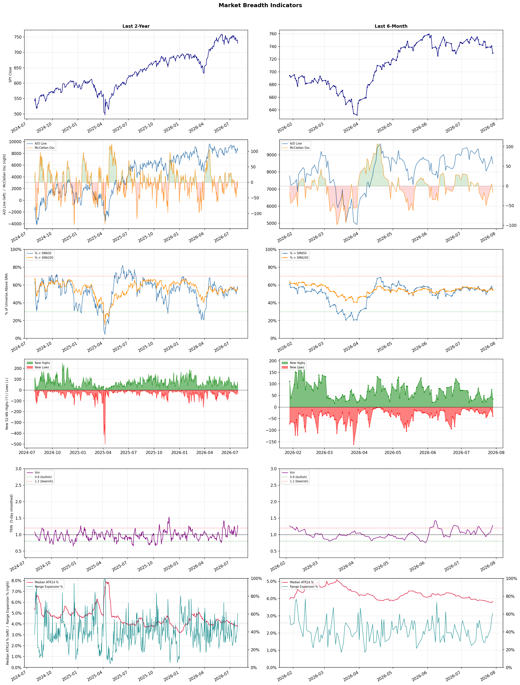

A daily market breadth and sector rotation report for active investors
| Item | Read |
|---|---|
| Regime | Selective Risk-On |
| Risk posture | Cautious |
| Universe | 1,335 stocks tracked · 35 new 52-week highs · 30 active swing setups |
| Breadth | 54.5% of tracked stocks are above SMA50 — neutral range, new lows exceed new highs (39 vs 35), McClellan oscillator (breadth momentum) is negative at -17.1 |
| Leadership | Oil & Gas Refining & Marketing, Insurance Brokers, and Insurance - Life |
| Weakest groups | Other Industrial Metals & Mining, Uranium, and Utilities - Renewable |
Use this report to prioritize research and chart review; validate entries, stops, liquidity, earnings, and risk before acting.
| Item | Read |
|---|---|
| Primary read | Selective Risk-On regime with Cautious risk posture. |
| Research queue | PBF, DINO, MPC, PSX, UGP |
| Leadership focus | Oil & Gas Refining & Marketing, Insurance Brokers, and Insurance - Life |
| Caution list | Other Industrial Metals & Mining, Uranium, and Utilities - Renewable |
| Review prompt | Check extension risk, chart location, fundamentals, valuation, and earnings before using any research row. |
| Item | Read |
|---|---|
| Primary read | 3 active risk warnings; use screen output as watchlist input only. |
| Bullish screens | SOLV, ROST, TJX, URBN, EXPE |
| Bearish screens | SOUN, CRWV, TSLA, BBAI |
| Alerts / levels | Automated trigger, stop, ATR, liquidity, reward/risk, and event-risk levels are pending future enrichment. |
| Review prompt | Open the linked chart, define trigger and invalidation, then check liquidity and event risk independently. |
Risk Posture: Cautious — screen backdrop is selective; prioritize research in top-ranked groups
Metric context: McClellan below -50 = elevated selling pressure; below -100 = washout territory. Range Expansion = share of stocks with daily range above their 20-day average. Signal Density = share of tracked names appearing in signal screens.
| Breadth Date | % > SMA50 | % > SMA200 | New Highs | New Lows | McClellan | Median Range | Avg Range | Median ATR14 | Range Expansion | Signal Density |
|---|---|---|---|---|---|---|---|---|---|---|
| 2026-07-29 | 54.5% | 54.3% | 35 | 39 | -17.1 | 4.0% | 4.9% | 3.8% | 60.7% | 3.5% |

Prior comparison date: July 28, 2026
| Metric | Prior | Current | Change |
|---|---|---|---|
| Regime | Selective Risk-On | Selective Risk-On | unchanged |
| Risk Posture | Selective | Cautious | changed |
| % > SMA50 | 58.4% | 54.5% | -3.8 pts |
| % > SMA200 | 56.0% | 54.3% | -1.7 pts |
| New Highs | 76 | 35 | -41 |
| New Lows | 17 | 39 | -22 |
Top-10 industries entering: Medical Instruments & Supplies, REIT - Hotel & Motel, REIT - Office, REIT - Retail, and Travel Services. Top-10 industries leaving: Banks - Diversified, Household & Personal Products, Insurance - Property & Casualty, Medical Care Facilities, and Packaging & Containers. New multi-signal long setups: ABBV, ABVX, AMRX, BHVN, CTVA, DBX, ELS, EWTX. New multi-signal short setups: BBAI, CRWV.
| Status | Tickers | Read |
|---|---|---|
| Added | ABBV, ABVX, AMRX, BBAI, BHVN, CRWV, CTVA, DBX | New technical screen matches vs prior report. |
| Removed | AFL, AHR, AMBP, AMGN, AON, BMY, CNK, DOC | No longer present in today's technical screen matches. |
| Still Active | ALL, LTH, RNG, ROST, SIRI, SJM, SOLV, STGW | Appeared in both current and prior reports. |
| Promoted | SOLV | Model Screen Score improved by at least 15 points. |
| Downgraded | none | Model Screen Score declined by at least 15 points. |
| Direction | Industry | ETF | Prior Rank | Current Rank | Days | Rank Change |
|---|---|---|---|---|---|---|
| Rose | Insurance Brokers | N/A | 85 | 2 | 42 | +83 |
| Rose | Oil & Gas Refining & Marketing | CRAK | 83 | 1 | 42 | +82 |
| Rose | Oil & Gas Integrated | XLE | 83 | 13 | 28 | +70 |
| Rose | Medical Instruments & Supplies | N/A | 71 | 6 | 42 | +65 |
| Rose | Apparel Retail | XRT | 67 | 7 | 28 | +60 |
Bull: The Insurance Brokers sector is likely experiencing rising relative strength due to robust demand for insurance services, as highlighted in the Yahoo Finance article discussing M&A opportunities and the positive earnings report from Ryan Specialty, indicating strong fundamentals. Despite recent fears of disruption from AI, which have led to some selloffs, the underlying growth drivers, including increased mergers and acquisitions and solid earnings performance, suggest that the sector remains resilient and positioned for long-term gains.
Bear: While the bull thesis highlights strong fundamentals and M&A opportunities, it overlooks the significant disruption risks posed by AI technologies that could fundamentally alter the insurance brokerage landscape. The recent selloff and declining valuations suggest that investors are increasingly wary of how AI may streamline processes and reduce the need for traditional brokerage services, potentially leading to a contraction in margins and overall profitability. Furthermore, the cyclical nature of the industry, as indicated by the falling stock prices from five-year highs, raises concerns about sustainability in earnings as market conditions shift.
Verdict: The Insurance Brokers sector is likely experiencing rising relative strength due to robust demand for insurance services and strong earnings reports, particularly from firms like Ryan Specialty, which suggest solid fundamentals and ongoing M&A activity. However, the key risk highlighted by the bear thesis is the potential disruption from AI technologies that could streamline operations, leading to lower demand for traditional brokerage services and impacting margins, which investors should monitor closely. It is advisable for stakeholders to remain cautious and consider the evolving landscape as they assess long-term investment strategies.
Sources: Google News
Bull: The Oil & Gas Refining & Marketing sector is experiencing a bullish trend primarily due to rising crude oil prices and increased demand for refined products, as indicated by the recent 52-week high of the Oil Refiners ETF (CRAK) and its recognition as a top-performing ETF. Additionally, the potential for geopolitical stability in the Middle East, as suggested by hopes for de-escalation, could further enhance refining margins and operational stability, driving investor confidence and interest in top refining stocks like Marathon Petroleum and others highlighted in recent analyses.
Bear: While the recent rise in the Oil & Gas Refining & Marketing sector, as evidenced by the 52-week high of the CRAK ETF, may seem promising, it is essential to consider the volatility inherent in crude oil prices and the potential for geopolitical tensions to escalate rather than stabilize. Additionally, the industry's reliance on refined product demand could be undermined by a shift towards renewable energy sources and regulatory pressures aimed at reducing carbon emissions, which may ultimately constrain long-term growth prospects for refiners like Marathon Petroleum.
Verdict: The Oil & Gas Refining & Marketing sector is rising primarily due to increasing crude oil prices and robust demand for refined products, bolstered by a recent 52-week high in the CRAK ETF and potential geopolitical stability in the Middle East. However, investors should remain cautious of the inherent volatility in crude oil prices and the long-term risks posed by a shift towards renewable energy and regulatory pressures aimed at reducing carbon emissions, which could dampen demand for refined products.
Sources: Yahoo Finance, Google News
Bull: The Oil & Gas Integrated sector is likely experiencing rising relative strength due to increasing fair value estimates for major oil stocks driven by higher oil prices, as highlighted in the recent headlines. Additionally, the positive momentum in energy stocks, as indicated by multiple reports of gains in the sector, suggests a growing investor confidence in the profitability of oil companies amidst a backdrop of rising oil prices, which can enhance their earnings potential and overall market performance.
Bear: While the recent gains in energy stocks may seem promising, they could be misleading as they are largely driven by short-term fluctuations in oil prices rather than sustainable growth fundamentals. Additionally, rising geopolitical tensions, potential regulatory changes aimed at combating climate change, and increasing competition from renewable energy sources could pose significant long-term risks to the profitability of oil and gas companies, undermining the bullish narrative of rising fair value estimates.
Verdict: The Oil & Gas Integrated sector's rising relative strength is primarily driven by increasing oil prices, which bolster fair value estimates for major oil stocks and enhance investor confidence in their profitability. However, key risks include geopolitical tensions and regulatory changes aimed at climate action, which could undermine long-term growth and profitability in the sector. Investors should remain cautious and consider these potential headwinds when evaluating opportunities in the oil and gas market.
Sources: Yahoo Finance, Google News
Bull: The Medical Instruments & Supplies sector is experiencing a bullish trend due to ongoing innovation and a favorable reset in valuations, as highlighted by AllianceBernstein. This is further evidenced by the sector-wide rally, with companies like Becton, Dickinson seeing significant gains, and positive Q1 earnings reports from key players like CooperCompanies and Integer Holdings indicating robust demand and growth potential. Additionally, the anticipation of continued advancements in medical technology positions the sector favorably for future investment, as noted by The Motley Fool's outlook for the best medical device stocks leading into 2026.
Bear: While the sector may currently be experiencing a rally, it is crucial to consider that this could be a temporary market reaction rather than a sustainable trend. Valuations may have reset, but they remain elevated in many cases, and the potential for regulatory challenges, supply chain disruptions, and rising costs could significantly impact profitability. Furthermore, the ongoing emphasis on innovation may not translate into immediate financial performance, as R&D investments can take years to yield returns, leaving companies vulnerable in the short term.
Verdict: The Medical Instruments & Supplies sector is experiencing a bullish trend driven by innovation and a favorable reset in valuations, as evidenced by strong earnings reports and market rallies among key players. However, investors should remain cautious of elevated valuations and potential risks such as regulatory challenges and supply chain disruptions, which could hinder profitability and impact the sector's growth trajectory in the short term. It's advisable to monitor these risks closely while considering investments in companies with robust fundamentals and a clear path to leveraging their R&D investments.
Sources: Google News
Bull: The Apparel Retail sector is experiencing rising relative strength primarily due to a combination of favorable macroeconomic conditions and positive sentiment surrounding consumer spending. With oil prices falling, as noted in the recent headlines, disposable income for consumers is likely increasing, which can lead to higher spending in the retail sector. Additionally, the mention of "the best retail stocks for 2026" and "well-poised" apparel stocks suggests that analysts are optimistic about the growth potential in this industry, further bolstering investor confidence and driving demand for apparel retail stocks.
Bear: While the bull thesis highlights favorable macroeconomic conditions, it overlooks the persistent inflationary pressures that continue to erode consumer purchasing power, particularly in discretionary spending categories like apparel. Additionally, the mixed signals from equity futures and the looming uncertainty surrounding the Fed's interest rate decisions suggest that investor sentiment may be more fragile than it appears, potentially leading to a pullback in consumer confidence and spending in the retail sector. Furthermore, the mention of "best retail stocks for 2026" could be speculative, as many companies in the apparel space are grappling with supply chain disruptions and changing consumer preferences that may hinder long-term growth prospects.
Verdict: The apparel retail sector's rising relative strength is primarily driven by improving macroeconomic conditions, including falling oil prices that boost disposable income and consumer spending. However, a key risk lies in persistent inflationary pressures and potential shifts in consumer confidence, which could dampen discretionary spending in the apparel category. Investors should closely monitor these economic indicators and consumer sentiment to assess the sustainability of growth in this sector.
Sources: Yahoo Finance, Google News
| Direction | Industry | ETF | Prior Rank | Current Rank | Days | Rank Change |
|---|---|---|---|---|---|---|
| Fell | Semiconductor Equipment & Materials | SOXX | 3 | 80 | 42 | -77 |
| Fell | Electrical Equipment & Parts | XLI | 8 | 84 | 42 | -76 |
| Fell | Semiconductors | SOXX | 4 | 79 | 42 | -75 |
| Fell | Electronic Components | XLK | 2 | 73 | 42 | -71 |
| Fell | Other Industrial Metals & Mining | N/A | 24 | 88 | 42 | -64 |
Bear: While the bullish perspective highlights individual stock performance, it overlooks the systemic risks posed by high leverage in the semiconductor sector, which can exacerbate downturns during market corrections. The recent sell-offs of companies like Coherent and Applied Optoelectronics signal a broader skepticism about sustainable growth in AI spending, indicating that the optimism from industry leaders may not reflect the underlying economic realities. Furthermore, the mixed signals from the market, including declining ETF values and uncertainty surrounding interest rate announcements, suggest that the sector may face significant headwinds in the near term, undermining the potential for a robust recovery.
Bull: The Semiconductor Equipment & Materials sector is experiencing a decline in relative strength primarily due to concerns over excessive leverage in the industry, as highlighted by the "chip crash" exposing the brutal costs associated with it. Additionally, the recent sell-off of key players like Coherent and Applied Optoelectronics, driven by skepticism surrounding AI spending, reflects broader market apprehensions that may be overshadowing the strong performance of individual stocks like Intel and AMD. Despite these challenges, the optimistic outlook from industry leaders, such as the CEO of a key equipment supplier stating it's the "greatest time ever for semiconductors," suggests potential for recovery and growth in the long term.
Verdict: The semiconductor equipment and materials sector is likely experiencing a decline due to heightened concerns over excessive leverage and skepticism regarding sustainable AI spending, which have led to significant sell-offs among key players. The key risk highlighted by the bear thesis is that high leverage could exacerbate downturns during market corrections, particularly as mixed market signals and uncertainty around interest rates loom. Investors should remain cautious and closely monitor leverage levels and macroeconomic indicators before making significant commitments in this sector.
Sources: Yahoo Finance, Google News
Bear: While the bull analyst attributes the relative weakness in the Electrical Equipment & Parts industry to broader market pressures and shifts in investor sentiment, it is crucial to recognize that the underlying fundamentals of the sector are deteriorating. Rising interest rates and inflationary pressures are likely to dampen capital expenditures in key industries that rely on electrical equipment, while the ongoing challenges in the semiconductor market could lead to supply chain disruptions and increased costs, further exacerbating the industry's struggles. Additionally, the surge in AI and defense spending may not translate into immediate benefits for electrical equipment companies, as these sectors often require different technological advancements and investment priorities.
Bull: The relative weakness in the Electrical Equipment & Parts industry can be attributed to broader market pressures, particularly the mixed performance of equity futures and ETFs ahead of significant economic announcements, such as the Fed's interest rate decision. Additionally, the renewed pressure on semiconductor stocks, as highlighted in the recent headlines, suggests a ripple effect impacting related sectors, including electrical equipment, as investor sentiment shifts towards more promising areas like AI and defense spending, which are gaining traction in the current market environment.
Verdict: The Electrical Equipment & Parts industry is experiencing a downturn primarily due to rising interest rates and inflation, which are expected to reduce capital expenditures in sectors reliant on electrical equipment. Additionally, the ongoing semiconductor challenges may lead to supply chain disruptions and increased costs, posing a significant risk to the industry's recovery. Investors should be cautious and consider reallocating resources to sectors that align better with current technological advancements and market priorities, such as AI and defense.
Sources: Yahoo Finance, Google News
Bear: While the strong performance of Intel and AMD may seem promising, it masks deeper issues within the semiconductor sector, particularly the risks associated with over-leverage and the unsustainable nature of current valuations. The recent selloff in companies like Coherent and Applied Optoelectronics highlights a growing skepticism about the viability of AI spending, which could lead to further corrections as investors reassess the fundamentals driving the sector. Additionally, mixed signals from the broader market and potential interest rate hikes could exacerbate volatility, making it difficult for the semiconductor sector to achieve a sustained recovery.
Bull: The semiconductor sector is experiencing a decline in relative strength primarily due to concerns about over-leverage in the industry, as highlighted by the "chip crash" exposing the brutal cost of leverage. Additionally, the mixed signals from the market, as seen in the headlines regarding fluctuating tech ETFs and the questioning of AI spending, have contributed to uncertainty, leading to a selloff in stocks like Coherent and Applied Optoelectronics. However, despite these challenges, the strong performance of major players like Intel and AMD, along with bullish recommendations from analysts, suggests that the sector may be poised for recovery as market conditions stabilize.
Verdict: The semiconductor industry's decline is fundamentally driven by concerns over over-leverage and unsustainable valuations, exacerbated by skepticism around AI spending and mixed market signals. The key risk lies in the potential for further corrections as investors reassess fundamentals, particularly if interest rate hikes materialize, which could hinder recovery prospects. Investors should remain cautious, focusing on companies with strong balance sheets and robust growth potential while monitoring macroeconomic indicators closely.
Sources: Yahoo Finance, Google News
Bear: While broader market pressures may contribute to the recent decline in the Electronic Components sector, it's crucial to recognize that the sector's fundamentals are increasingly under scrutiny. The stumble of AI tech stocks after earnings suggests a deeper issue with growth expectations, and as interest rates rise, the cost of capital for electronic component companies may squeeze margins and stifle innovation. Additionally, the persistent bearish sentiment in tech indicates that investor confidence is waning, raising concerns about the sustainability of demand for electronic components in an increasingly competitive and uncertain environment.
Bull: The recent decline in the relative strength of the Electronic Components sector can be attributed to broader market pressures impacting tech stocks, as highlighted by headlines indicating a stumble in AI tech stocks after earnings and a general downturn in equities ahead of the Fed's interest rate announcement. Additionally, the mixed performance of exchange-traded funds and the overall bearish sentiment in the tech sector, as noted in the updates, suggest that investor caution is leading to a sell-off in electronic components, despite the sector's underlying fundamentals.
Verdict: The recent decline in the Electronic Components sector is primarily driven by broader market pressures, including a sell-off in tech stocks and investor caution ahead of the Fed's interest rate announcement. However, a key risk highlighted by the bear thesis is the potential for rising interest rates to squeeze margins and dampen innovation, which could further erode demand for electronic components in a competitive landscape. Investors should closely monitor interest rate trends and growth expectations in the tech sector to gauge the sustainability of the recovery.
Sources: Yahoo Finance, Google News
Bear: While the bull analyst attributes the sector's decline to broader selling pressures and a pivot towards AI-driven innovations, it's crucial to recognize that the underlying fundamentals of the Other Industrial Metals & Mining sector remain weak. The significant drop in Materion's stock price indicates not just sector volatility but potential underlying issues such as declining demand, rising production costs, and regulatory challenges that could hinder growth. Furthermore, the focus on AI and technology may not be enough to offset the structural challenges facing traditional mining companies, leading to a more prolonged downturn in the sector.
Bull: The recent decline in relative strength for the Other Industrial Metals & Mining sector is likely driven by broader sector-wide selling pressures, as indicated by the significant drop in Materion's stock price by 11.2%. Additionally, the focus on AI advancements in mining and metals, as highlighted in the BCG article, suggests a potential shift in investment towards more innovative and technology-driven companies, which could be diverting capital away from traditional players in the sector. This combination of sector-wide volatility and a pivot towards tech-enhanced mining solutions is contributing to the relative weakness observed in this industry.
Verdict: The decline in the Other Industrial Metals & Mining sector is primarily driven by weak underlying fundamentals, including declining demand and rising production costs, as evidenced by the significant drop in Materion's stock price. While the shift towards AI and technology in mining presents opportunities, it may not sufficiently counteract the structural challenges facing traditional companies, posing a risk of prolonged downturns in the sector. Investors should remain cautious and closely monitor demand trends and regulatory developments that could further impact growth.
Sources: Google News
| Industry | Rank | ETF | 7d | 14d | 28d | 42d | Chg 42d | Size | 20D | 60D | Composite | Active Setups |
|---|---|---|---|---|---|---|---|---|---|---|---|---|
| Oil & Gas Refining & Marketing | 1 | CRAK | 1 | 1 | 54 | 83 | +82 | 7 | 22.5% | 17.5% | 0.961 | 0 |
| Insurance Brokers | 2 | N/A | 17 | 23 | 32 | 85 | +83 | 6 | 13.0% | 20.3% | 0.882 | 0 |
| Insurance - Life | 3 | N/A | 7 | 12 | 33 | 46 | +43 | 7 | 11.3% | 13.3% | 0.871 | 0 |
| REIT - Office | 4 | XLRE | 9 | 9 | 6 | 9 | +5 | 8 | 4.8% | 29.0% | 0.869 | 0 |
| REIT - Healthcare Facilities | 5 | XLRE | 3 | 17 | 18 | 64 | +59 | 10 | 6.4% | 12.0% | 0.851 | 0 |
| Medical Instruments & Supplies | 6 | N/A | 25 | 22 | 28 | 71 | +65 | 13 | 10.1% | 15.9% | 0.822 | 0 |
| Apparel Retail | 7 | XRT | 28 | 50 | 67 | 35 | +28 | 8 | 8.4% | 11.1% | 0.816 | 1 |
| REIT - Retail | 8 | N/A | 11 | 34 | 29 | 44 | +36 | 11 | 4.1% | 8.9% | 0.812 | 1 |
| REIT - Hotel & Motel | 9 | XLRE | 5 | 10 | 12 | 6 | -3 | 9 | 2.9% | 28.0% | 0.800 | 0 |
| Travel Services | 10 | N/A | 39 | 25 | 21 | 20 | +10 | 10 | 5.7% | 18.0% | 0.791 | 0 |
Rank columns (7d–42d) show the industry's rank that many trading days ago — lower is stronger. Chg 42d = rank change vs 42 trading days ago — positive means the industry moved up. 20D and 60D are the mean stock return within the industry over that period. Active Setups: count of today's swing-trade candidates from this industry appearing across all signal screens.
| Industry | Rank | ETF | 7d | 14d | 28d | 42d | Chg 42d | Size | 20D | 60D | Composite | Active Setups |
|---|---|---|---|---|---|---|---|---|---|---|---|---|
| Other Industrial Metals & Mining | 88 | N/A | 87 | 88 | 81 | 24 | -64 | 21 | -22.7% | -34.4% | 0.065 | 0 |
| Uranium | 87 | URA | 88 | 87 | 88 | 74 | -13 | 6 | -14.7% | -35.0% | 0.072 | 0 |
| Utilities - Renewable | 86 | N/A | 86 | 82 | 72 | 40 | -46 | 7 | -25.9% | -22.4% | 0.072 | 0 |
| Solar | 85 | TAN | 81 | 57 | 57 | 26 | -59 | 8 | -24.8% | -15.1% | 0.083 | 0 |
| Electrical Equipment & Parts | 84 | XLI | 82 | 69 | 38 | 8 | -76 | 12 | -38.4% | -27.4% | 0.106 | 0 |
| Aerospace & Defense | 83 | ITA | 85 | 85 | 73 | 58 | -25 | 26 | -21.2% | -21.1% | 0.120 | 0 |
| Utilities - Independent Power Producers | 82 | XLU | 68 | 71 | 79 | 45 | -37 | 5 | -12.2% | -18.3% | 0.147 | 0 |
| Gold | 81 | GDX | 84 | 86 | 87 | 70 | -11 | 26 | -4.6% | -18.9% | 0.181 | 0 |
| Semiconductor Equipment & Materials | 80 | SOXX | 64 | 54 | 7 | 3 | -77 | 17 | -37.6% | -16.2% | 0.198 | 0 |
| Semiconductors | 79 | SOXX | 61 | 46 | 30 | 4 | -75 | 38 | -29.9% | -11.0% | 0.202 | 0 |
Rank columns (7d–42d) show the industry's rank that many trading days ago — lower is stronger. Chg 42d = rank change vs 42 trading days ago — positive means the industry moved up. 20D and 60D are the mean stock return within the industry over that period. Active Setups: count of today's swing-trade candidates from this industry appearing across all signal screens.
These are research candidates from top-ranked stocks, capped at five names per industry to avoid over-concentration. Returns shown (60D, 120D, 250D) are historical — they reflect where prices have already moved, not forward expectations. Extension Risk flags names that may require extra patience or a better entry point. They are not buy signals.
Chart: TV = TradingView chart (opens in browser); PDF = local chart file (if downloaded).
| Ticker | Name | Industry | Industry Rank | Market Cap | 60D Hist | 120D Hist | 250D Hist | Extension Risk | Research Reason | Chart |
|---|---|---|---|---|---|---|---|---|---|---|
| PBF | PBF Energy | Oil & Gas Refining & Marketing | 1 | N/A | 47.3% | 79.5% | 157.2% | Constructive | Top-ranked in industry | TV |
| DINO | HF Sinclair | Oil & Gas Refining & Marketing | 1 | N/A | 30.1% | 58.4% | 107.2% | Constructive | Top-ranked in industry | TV |
| MPC | Marathon Petroleum | Oil & Gas Refining & Marketing | 1 | N/A | 25.4% | 57.6% | 80.8% | Constructive | Top-ranked in industry | TV |
| PSX | Phillips 66 | Oil & Gas Refining & Marketing | 1 | N/A | 17.4% | 33.7% | 66.2% | Constructive | Top-ranked in industry | TV |
| UGP | Ultrapar Participacoes | Oil & Gas Refining & Marketing | 1 | N/A | 4.4% | 26.6% | 101.0% | Constructive | Top-ranked in industry | TV |
| BRO | Brown & Brown | Insurance Brokers | 2 | N/A | 29.9% | 1.1% | -19.4% | Constructive | Top-ranked in industry | TV |
| AJG | Arthur J. Gallagher | Insurance Brokers | 2 | N/A | 29.2% | 7.8% | -5.9% | Constructive | Top-ranked in industry | TV |
| BWIN | Baldwin Insurance Group | Insurance Brokers | 2 | N/A | 28.1% | 36.9% | -23.3% | Constructive | Top-ranked in industry | TV |
| AON | Aon PLC | Insurance Brokers | 2 | N/A | 21.1% | 7.7% | 6.1% | Constructive | Top-ranked in industry | TV |
| MRSH | Marsh | Insurance Brokers | 2 | N/A | 18.9% | 4.1% | -1.5% | Constructive | Top-ranked in industry | TV |
| PRU | Prudential Financial | Insurance - Life | 3 | N/A | 24.3% | 20.0% | 20.5% | Constructive | Top-ranked in industry | TV |
| MET | MetLife | Insurance - Life | 3 | N/A | 20.9% | 24.4% | 29.7% | Constructive | Top-ranked in industry | TV |
| AFL | Aflac Inc | Insurance - Life | 3 | N/A | 14.0% | 13.2% | 30.5% | Constructive | Top-ranked in industry | TV |
| LNC | Lincoln National | Insurance - Life | 3 | N/A | 10.4% | 1.9% | 21.1% | Constructive | Top-ranked in industry | TV |
| PUK | Prudential | Insurance - Life | 3 | N/A | -3.0% | -12.9% | 17.9% | Lagging | Top-ranked in industry; lagging | TV |
| HIW | Highwoods Properties Inc | REIT - Office | 4 | N/A | 39.2% | 32.4% | 18.5% | Constructive | Top-ranked in industry | TV |
| CUZ | Cousins Properties Inc | REIT - Office | 4 | N/A | 25.7% | 24.3% | 18.7% | Constructive | Top-ranked in industry | TV |
| BXP | BXP Inc | REIT - Office | 4 | N/A | 22.9% | 14.5% | 9.8% | Constructive | Top-ranked in industry | TV |
| KRC | Kilroy Realty Corp | REIT - Office | 4 | N/A | 17.2% | 15.0% | 6.3% | Constructive | Top-ranked in industry | TV |
| DEI | Douglas Emmett Inc | REIT - Office | 4 | N/A | 12.1% | 17.0% | -20.3% | Constructive | Top-ranked in industry | TV |
These are technical screen matches from existing signal files. They are not trade recommendations. Trigger, stop, ATR, liquidity, reward/risk, and event risk still require separate validation until those inputs are available.
Model Screen Score is weighted by signal count, industry rank, freshness, and setup type. It is not a probability of profit, expected return, or suitability rating. Industry cap: max 3 candidates per industry.
Signal glossary: Momentum Pullback = stock in an uptrend that has pulled back 10–30% and shows re-entry conditions. MA Compression = short- and long-term moving averages converging, often preceding a directional move. Three-Day Up/Down = three consecutive closes in the same direction. New 52Wk High/Low = price reached a new annual extreme.
Chart: TV = TradingView chart (opens in browser); PDF = local chart file (if downloaded).
| Ticker | Industry | Setups | Close | Industry Rank | Signal Count | Model Screen Score | Reason | Chart |
|---|---|---|---|---|---|---|---|---|
| SOLV | Medical Instruments & Supplies | New 52Wk High; Three-Day Up | 88.55 | 6 | 2 | 93 | Multi-signal; top industry breakout | TV |
| ROST | Apparel Retail | New 52Wk High; Three-Day Up | 251.96 | 7 | 2 | 93 | Multi-signal; top industry breakout | TV |
| TJX | Apparel Retail | MA Compression; Three-Day Up | 161.63 | 7 | 2 | 88 | Multi-signal; top industry setup | TV |
| URBN | Apparel Retail | MA Compression; Three-Day Up | 75.40 | 7 | 2 | 88 | Multi-signal; top industry setup | TV |
| EXPE | Travel Services | New 52Wk High; Three-Day Up | 304.27 | 10 | 2 | 85 | Multi-signal; top industry breakout | TV |
| IQV | Diagnostics & Research | New 52Wk High; Three-Day Up | 247.56 | 12 | 2 | 85 | Multi-signal; new-high strength | TV |
| PBR | Oil & Gas Integrated | Momentum Pullback; Three-Day Up | 18.59 | 13 | 2 | 85 | Multi-signal; pullback setup | TV |
| ALL | Insurance - Property & Casualty | New 52Wk High; Three-Day Up | 274.39 | 15 | 2 | 85 | Multi-signal; new-high strength | TV |
| LTH | Leisure | New 52Wk High; Three-Day Up | 45.70 | 16 | 2 | 77 | Multi-signal; new-high strength | TV |
| ABBV | Drug Manufacturers - General | New 52Wk High; Three-Day Up | 263.30 | 17 | 2 | 77 | Multi-signal; new-high strength | TV |
| PAGP | Oil & Gas Midstream | New 52Wk High; Three-Day Up | 26.66 | 18 | 2 | 77 | Multi-signal; new-high strength | TV |
| ROKU | Entertainment | New 52Wk High; Three-Day Up | 145.33 | 20 | 2 | 77 | Multi-signal; new-high strength | TV |
| SIRI | Entertainment | New 52Wk High; Three-Day Up | 32.59 | 20 | 2 | 77 | Multi-signal; new-high strength | TV |
| RNG | Software - Application | New 52Wk High; Three-Day Up | 57.58 | 21 | 2 | 77 | Multi-signal; new-high strength | TV |
| STGW | Advertising Agencies | New 52Wk High; Three-Day Up | 8.08 | 27 | 2 | 70 | Multi-signal; new-high strength | TV |
| SJM | Packaged Foods | New 52Wk High; Three-Day Up | 126.35 | 28 | 2 | 70 | Multi-signal; new-high strength | TV |
| TGT | Discount Stores | New 52Wk High; Three-Day Up | 145.90 | 32 | 2 | 70 | Multi-signal; new-high strength | TV |
| KO | Beverages - Non-Alcoholic | New 52Wk High; Three-Day Up | 89.08 | 37 | 2 | 70 | Multi-signal; new-high strength | TV |
| AMRX | Drug Manufacturers - Specialty & Generic | New 52Wk High; Three-Day Up | 19.10 | 40 | 2 | 70 | Multi-signal; new-high strength | TV |
| ELS | REIT - Residential | MA Compression; Three-Day Up | 67.65 | 35 | 2 | 65 | Multi-signal; compression setup | TV |
| CTVA | Agricultural Inputs | New 52Wk High; Three-Day Up | 90.51 | 42 | 2 | 65 | Multi-signal; new-high strength | TV |
| DBX | Software - Infrastructure | New 52Wk High; Three-Day Up | 33.33 | 47 | 2 | 65 | Multi-signal; new-high strength | TV |
| ZETA | Software - Infrastructure | Momentum Pullback; Three-Day Up | 22.08 | 47 | 2 | 65 | Multi-signal; pullback setup | TV |
| ABVX | Biotechnology | Momentum Pullback | 118.84 | 44 | 2 | 50 | Multi-signal; pullback setup | TV |
| BHVN | Biotechnology | Momentum Pullback | 13.43 | 44 | 2 | 50 | Multi-signal; pullback setup | TV |
| EWTX | Biotechnology | Momentum Pullback | 39.75 | 44 | 2 | 50 | Multi-signal; pullback setup | TV |
Bearish setups — stocks making new lows or showing persistent downside patterns. Validate carefully before acting.
| Ticker | Industry | Setups | Close | Industry Rank | Signal Count | Model Screen Score | Reason | Chart |
|---|---|---|---|---|---|---|---|---|
| SOUN | Software - Application | New 52Wk Low; Three-Day Down | 5.70 | 21 | 2 | 47 | Multi-signal; new-low weakness | TV |
| CRWV | Software - Infrastructure | New 52Wk Low; Three-Day Down | 60.82 | 47 | 2 | 35 | Multi-signal; new-low weakness | TV |
| TSLA | Auto Manufacturers | New 52Wk Low; Three-Day Down | 298.32 | 48 | 2 | 35 | Multi-signal; new-low weakness | TV |
| BBAI | Information Technology Services | New 52Wk Low; Three-Day Down | 2.59 | 50 | 2 | 35 | Multi-signal; new-low weakness | TV |
How To Use This Report
| Use | Purpose |
|---|---|
| Market map | Start with breadth, regime, risk warnings, and what changed since the prior report. |
| Industry scan | Use leading, deteriorating, rising, and declining industries to focus research. |
| Research queue | Treat long-term candidates as names for deeper fundamental, valuation, and chart review. |
| Technical review | Treat bullish and bearish screen matches as watchlist inputs that require independent trigger, stop, liquidity, and event-risk checks. |
| Source follow-up | Use chart links and source files to verify raw inputs before relying on any row. |
What This Report Is Not
| Not | Meaning |
|---|---|
| Investment advice | The report does not evaluate personal objectives, risk tolerance, tax situation, account type, or suitability. |
| Buy/sell recommendation | Named tickers are research candidates or screen matches, not recommendations to transact. |
| Price target | The report does not provide fair value estimates, targets, or expected returns. |
| Trade plan | Trigger, stop, sizing, reward/risk, liquidity, and event-risk review remain separate user work. |
| Performance claim | Model Screen Score is not validated historical performance or a forecast of future results. |
| Item | Note |
|---|---|
| Version | Daily Report Methodology v1 |
| Model Screen Score | Screen-fit rank based on signal count, industry rank, freshness, and setup type. |
| Not predictive proof | The score is not expected return, probability of profit, historical validation, or suitability analysis. |
| Industry ranks | Composite industry ranks use existing daily ranking outputs and historical rank columns when available. |
| Research candidates | Long-term rows are research candidates from ranked stocks and leading industries, with historical returns labeled as historical only. |
| Technical matches | Bullish and bearish rows are screen matches requiring independent chart, trigger, stop, liquidity, and event-risk review. |
| Source | Status | Rows | Path |
|---|---|---|---|
| Market breadth | present | 1253 | breadth_20260729.csv |
| Industry composite rankings | present | 88 | all_industry_composite_20260729.csv |
| Top ranked stocks | present | 89 | top_ranked_composite_20260729.csv |
| All ranked stocks | present | 1335 | all_stocks_composite_sorted_20260729.csv |
| Top momentum pullbacks | present | 1486 | top_momentum_pullbacks_20260729.csv |
| MA compression | present | 1486 | ma_compression_stocks_20260729.csv |
| Three-day up/down | present | 418 | three_day_up_down_stocks_20260729.csv |
| New 52-week members | present | 74 | breadth_new_52wk_members_20260729.csv |
This report is generated from automated technical screens and is for informational and research purposes only. It is not investment advice, a solicitation, or a recommendation to buy or sell any security. Past performance is not indicative of future results. You are solely responsible for your own investment decisions. Consult a licensed financial advisor before acting on any information herein.